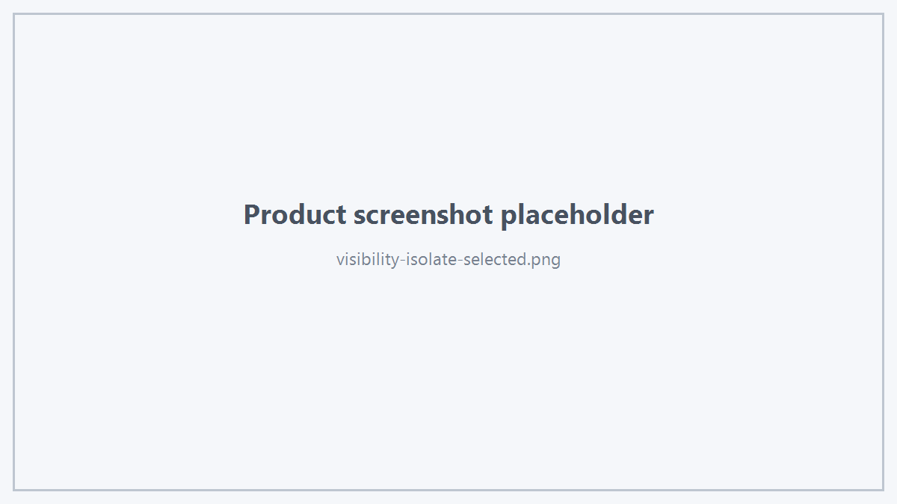

Viewer 提供 Selection、Target、Object、Topology Part 和 Mesh Part 多个层级的显隐控制。
1. Selection Visibility
隐藏当前 Selection：
显示当前 Selection：
只显示当前 Selection：
viewer.isolateSelected();
退出 Isolate：

Isolate Selected
2. Show All
3. Reset Visibility
viewer.resetVisibility();
用于重置 Viewer 可见性状态。
4. Target Visibility
viewer.setTargetVisible(target, false);
查询：
bool visible = false;
viewer.targetVisible(target, visible);
5. Object Visibility
viewer.setObjectsVisible(objectIds, false);
6. Targets
viewer.setTargetsVisible(targets, true);
7. Object Display Part
viewer.setObjectPartVisible(
objectId,
HtsObjectDisplayPart::Edges,
false);
支持：
- Object
- Faces
- Edges
- Vertices
8. Object Topology
viewer.setObjectTopologyVisible(objectIds, false);
适合整体控制对象的拓扑辅助显示。
9. Display Override Reset
viewer.resetDisplayOverrides();
该接口用于重置通过公开 Display Override API 施加的显示覆盖。
10. Mesh Visibility
Mesh 显隐使用 Mesh 专用接口：
setMeshVisible()
setMeshPartsVisible()
showOnlyMeshParts()
不要把 CAD Object 的显隐 ID 与 Mesh Part ID 混用。
 1.18.0
1.18.0